Gear System & Crafting Guide — Brown Dust 2
The Gear System is an important character progression system. It increases a character's stats, improving damage output or improving sustain on the battlefield.
There are 5 gear slots available for your characters:  Weapon,
Weapon,  Armor,
Armor,  Helmet,
Helmet,  Accessory and
Accessory and  Gloves.
Gloves.
Generally speaking,  Weapon,
Weapon,  Accessory and
Accessory and  Gloves are considered to be offensive gear, while
Gloves are considered to be offensive gear, while  Armor and
Armor and  Helmet are considered to be defensive gear.
Helmet are considered to be defensive gear.

For each gear piece, there is at least 1 Basic Attribute (Main Stat) and 3 Options (Substats) which carry those additional stats.
Gear is obtainable via Crafting (which is the main source), Event Shop or by pulling in gacha (Exclusive Gear only).
Gear has a lot of different layers, defining how good it actually is. These layers are Grade (Rarity), Tier, Upgrade Level, Upgrade Rank (Score), Basic Attributes & Options.
Looking for Build Advice?
Already know how the system works and just want to know what to craft or equip?
Jump straight to the Crafting Guide or Gearing Guide.
Gear Grade (Rarity)
There are a total of 4 grades (rarities) that gear can have:
 N Grade
N Grade  R Grade
R Grade SR Grade
SR Grade UR Grade
UR Grade
You can see the grade in the top right corner of each gear piece or to the right of the gear name if you decide to check it in more detail.
Image Guide

Grade difference
- The main difference is the amount of stats each Grade gives. N gives the least, UR gives the most.
- The second difference is the amount of Basic Attributes (main stats) and/or their specifics. It is explained in more detail in this chapter, although it is recommended to just follow the natural explanation without skipping other sections.
Gear Tier
Each Grade can have different Tiers. There are a total of 4 Tiers which are shown as roman numbers from \(\text{I}\) through \(\text{IV}\) for a crafted gear piece. The higher the number, the better.
- Exclusive Gear has no number, although its tier is \(\text{IV}\).
- Event Shop Gear has no number either, although its tier is \(\text{III}\).
Another very useful way to check for gear Tier
You can check the gear tier by checking the amount of stars.
- Zero silver stars mean the tier is \(\text{I}\).
- One silver star means tier is \(\text{II}\).
- Two silver stars means tier is \(\text{III}\).
- Three silver stars means tier is \(\text{IV}\).
- One gold star means it is an exclusive gear.
Image Guide

Crafting RNG
When you craft gear, it has a set chance to get a specific tier:
- \(\text{I}\): 50%;
- \(\text{II}\): 30%;
- \(\text{III}\): 15%;
- \(\text{IV}\): 5%.
Even though Tier \(\text{IV}\) is very rare, it provides much better stats compared to Tier \(\text{I}\). It is fine to use Tier \(\text{III}\) gear, although with no huge investment into it. You should avoid actively using Tier \(\text{I}\) and Tier \(\text{II}\).
Gear Level
The next layer of Gear investment is its Level. Each level enhances Basic Attribute values.
Each Gear can be upgraded up to a total of 9 times, resulting in having a +9 Gear piece.
Each upgrade costs  Gold (price depends on the Grade and Upgrade Level) and has a chance to fail. If the upgrade fails, there is no penalty or downgrade risk.
Gold (price depends on the Grade and Upgrade Level) and has a chance to fail. If the upgrade fails, there is no penalty or downgrade risk.
For detailed info about success chances, check CatlessCat's sheet.
Alternatively, use Official Gitbook.
On +3, +6 and +9 Level, Option (Substats) slots are opened.
Aside from unlocking Option slot itself, they enhance Basic Attribute values via Upgrade Scores, similar to Levels, although the +9 slot has way more impact compared to the +3 one. Each slot also receives the letter  ,
, ,
, or
or  , the functionality of which will be covered in the next chapter.
, the functionality of which will be covered in the next chapter.
For detailed info about the mathematical side of upgrade values, check this sheet.
Image Guide

Level representation
As you can see from the picture, some gear pieces have their level in the preview, while others have a star in its place. Do not worry — that star is a natural extension of the Upgrade system and replaces the level indicator when you reach +9 automatically.
Time saving feature
To prevent exhaustion and to guarantee quick upgrade, press the Repeat button, set the slider to the max (or use the MAX button), then hit the Upgrade button, and, finally, press the  Skip button.
Skip button.
Image Guide

 Gear Refinement
Gear Refinement
Gear Refinement comes right after Upgrades. When you reach +9 and all Options are unlocked, the star with the number inside will be unlocked as well.
It is the so-called Gear Score, which represents the most important layer of enhancing values given by the gear. Each of the refinement scores is represented by the letters  ,
,  ,
,  and
and  , with
, with  being the best possible one.
being the best possible one.
As was mentioned earlier, each following Option slot has a bigger impact towards the overall score. The weighted sum of slots gives the final score.
- The Minimum Total Score is 6, being
 .
. - The Maximum Total Score is 24, being
 .
. - Increasing the score by 1 has the same Basic Attribute value increase as upgrading the gear by 1 level.
Detailed Score Explanation
- Each letter is assigned a number 1-4, with receiving 1 and 4 correspondingly.
- Second and third letter bonus is multiplied by 2 and 3 correspondingly.
- Each letter value is added towards the Total Score.

Interesting yet totally useless fact
- Scores from 6 to 11 are displayed with
 star.
star. - Scores from 12 to 16 are displayed with
 star.
star. - Scores from 17 to 20 are displayed with
 star.
star. - Scores from 21 to 24 are displayed with
 star.
star.
You can change the Gear Score you have by a process called Refinement. It uses  Gold and
Gold and
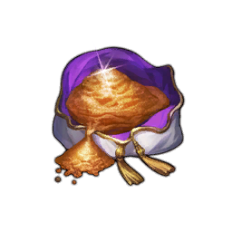
Refining Powder to roll one of 81 possible scores (- You keep the best score obtained, meaning there is no possible downgrade for the gear.
- The higher the score, the lower the chances of it appearing. This becomes especially noticeable after score 18, when the chances decrease significantly, making maxed gear a whale-level challenge.
- Despite multiple possible letter combinations for the same score, they have no difference in Base Attributes value increase.
Probability Chances (for UR gear)
 Alternatively, use Official Gitbook, although keep in mind it uses a different way to describe the same percentages.
Alternatively, use Official Gitbook, although keep in mind it uses a different way to describe the same percentages.
Time saving feature
To prevent exhaustion and to do refinement much quicker, press the Repeat button, set the slider to the max (or use the MAX button), then hit the Refinement button, and, finally, press the  Skip button.
Skip button.
It is advised to have the "Ends once refining succeeds" feature ON as it prevents you from overspending the powder. Although it means that upgrading gear to Score 18 will take a few cycles.
Image Guide

Gear Stats
Basic Attributes
Different Gear pieces have different Basic Attributes, which define how good the gear actually is. You tend to use different gear for different purposes, so it is important to know what to use and when.
- and Gear have 1 and 2 Basic Attributes respectively. These attributes are not rerollable.
- and Gear have 2 Basic Attributes, with Attribute 1 fixed and Attribute 2 rerollable via the refinement menu. The reroll options for Attribute 2 are always between "relevant stats": this means that offensive gear will only have offensive options and the same goes for defensive gear. Moreover, offensive gear will give options only relevant to the 1st Attribute in terms of damage type.
- Exclusive Gear has 2 Basic Attributes regardless of rarity, with Attribute 1 swappable between two relevant stats for no cost. Attribute 2 behaves similarly to / gear.
You can check possible stats for each individual gear piece by pressing the ? in the refinement menu.
Image Guide

Options
Options, also known as substats, can be rerolled regardless of the gear's Grade or Tier. As was discussed above, there are a total of 3 Options, each giving some random stat.
Similar to Basic Attributes, you can obtain mostly "relevant" stats only, although their variety is bigger compared to Basic Attributes; for example, defensive gear can roll offensive stats of the same damage type (DEF armor can roll ATK, MRES armor can roll MATK).
- Option values depend on the Grade and Tier of the gear.
- Option values DO NOT depend on the Gear (Total) Score.
- Option values DO NOT depend on the Individual Refinement Score of each Option slot. (Having either or will not change the values)
You can check the possible Option stats for each individual gear piece by pressing the ? in the refinement menu.
Image Guide

Options Reroll
As it was stated earlier, you can change the Options (and in some cases Basic Attribute 2) to the desired ones. To do that, click the  in the Gear Menu.
in the Gear Menu.
Image Guide

On the right side of the menu you can see the stats allowed to be rerolled.
Each reroll uses currency —  Gold and either
Gold and either
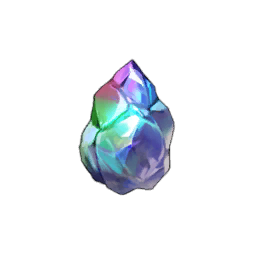
Refining Stones or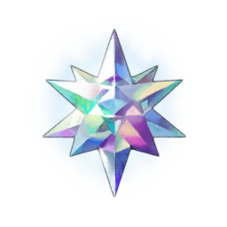
Refining Crystals. The initial price depends on the Grade of the gear.- For gear, only Refining Stones can be used.
- For and gear, both can be used, with Refining Stones taking priority. They basically act as Refining Crystals at a 10:1 ratio. You cannot spend Crystals before depleting Stones first, although it is more convenient this way.
To do the reroll, press the Option Refinement button. After that, you're given a choice of keeping previous stats (Keep Option button), taking new stats (Confirm button) or rerolling once more (Retry button).
- You can leave your choice unconfirmed for up to 12 hours. After that, the game will keep the previous ones.
Reroll Image

Locking Stats
Rerolling and praying to get 3 or 4 desired stats at once can be a lot to ask. With that in mind, you can lock the desired stat to prevent it from being rerolled.
To do that, press  Lock Icon on the left of stat. Keep in mind that this will increase currency consumption by the base amount for each stat locked, reaching x4 the price for 3 stats locked.
Lock Icon on the left of stat. Keep in mind that this will increase currency consumption by the base amount for each stat locked, reaching x4 the price for 3 stats locked.
Price Dependency based on the amount of locked stats

Summary so far
Each gear piece has its own Grade and Tier. Grades vary from  to
to  , while Tiers vary from \(\text{I}\) to \(\text{IV}\).
, while Tiers vary from \(\text{I}\) to \(\text{IV}\).
The higher the Grade and Tier are, the better the gear is.
That means that  \(\text{I}\) gear is the worst, while
\(\text{I}\) gear is the worst, while  \(\text{IV}\) Gear is the best (except Exclusive gear).
\(\text{IV}\) Gear is the best (except Exclusive gear).
Each Gear piece can be upgraded to 9 levels, enhancing values given by the gear and unlocking Options (substats).
After you upgrade your gear to +9, you can refine it to obtain a score from 6 to 24, which enhances its values further. The higher the score is, the better, but chances are slimmer. Only the best refinement is kept, you cannot downgrade the gear.
Another unlock after +9 is Options, aka substats. They give extra stats which are rerollable into desired ones. Their values are fixed and depend only on gear Grade and Tier. Values do not depend on Gear Score in any way.
Special Gear
Event Gear
In the Season Event Shop you can obtain special gear. It is essentially  \(\text{III}\) and
\(\text{III}\) and  \(\text{III}\) Gear pieces, but they have some unique mechanics.
\(\text{III}\) Gear pieces, but they have some unique mechanics.
Event Shop Menu; White border shows gears, yellow shows Upgrading material

- Event Gear has no Roman number, representing tier, but, as established earlier, it is Tier \(\text{III}\) due to the amount of stars.
- Event Gear does not require
 Gold for upgrading its level. Instead, it uses a corresponding Upgrading material (different for each gear) and has no fail chance.
Gold for upgrading its level. Instead, it uses a corresponding Upgrading material (different for each gear) and has no fail chance.- Gear uses 3 currency per level upgrade. (Total: 27)
- Gear uses 1 currency per level upgrade. (Total: 9)
- Event Gear does not have a Refinement process at all; instead, the Gear automatically gets a Score for each Option slot, resulting in a Gear Score of 24.
Visual Demonstration

Except for things mentioned above, Gear is identical to the gear of the same Grade.
Advice regarding Event Gear
Do NOT purchase  Gear.
Gear.
If you have enough currency and you bought more important stuff beforehand, you can purchase  Gear and 27 Upgrade materials.
Gear and 27 Upgrade materials.
You can keep buying them until the end game since they are better than craftable  \(\text{III}\) for Support Bonus of Last Night.
\(\text{III}\) for Support Bonus of Last Night.
Quick Event Shop Priority Guide

Exclusive Gear
Exclusive (EX) Gear is a type of gear obtainable from gacha only. It is displayed with one gold star instead of a Tier.
As its name might suggest, this type of gear can only be equipped on a specific character this gear is suitable for. Similar to Event Gear, it also slightly differs from craftable gear.
- Each Exclusive gear gets an Exclusive Attribute, an additional stat. Its value depends only on the Grade of the gear.
- Despite also not having a Roman number, each Exclusive gear inherits the stats of the \(\text{IV}\) Tier of a given Grade. That means, \(\text{EX}\) scales the same way \(\text{IV}\) does.
- In very simple words, \(\text{EX}\) Gear is the equivalent of an \(\text{IV}\), but with an extra stat on top.
- There are \(\text{EX}\), \(\text{EX}\) and \(\text{EX}\) Gears. \(\text{EX}\) only exists for 3-4★ Characters, while the rest exist for any character.
-
There is exactly one exclusive gear for each character. It can be any piece of gear, although in most cases it is
 Weapon /
Weapon /  Accessory for DPS characters.
Accessory for DPS characters. -
Basic Attribute 1 of the \(\text{EX}\) Gear is swappable between two options with no cost, while Basic Attribute 2 is rerollable, similar to Options.
Except for things mentioned above, Gear is identical to the gear of the same Grade.
Exclusive Gear Reroll Menu

EX Gear Impact
- \(\text{EX}\) Gear is roughly equal to \(\text{III}\) Craftable Gear.
- \(\text{EX}\) Gear gives ~10-20% more damage compared to \(\text{IV}\) Craftable Gear.
What do I do with duplicate Exclusive Gear for a character?
If you happen to get a second gear copy,
- If it's a 5★ Character's gear, keep 1 duplicate in case you need another build and dismantle the rest.
- If it's 3★ or 4★ Character's gear, dismantle any extra dupe.
- If it's Gear regardless of the character, dismantle it as well.
- Before committing to the dismantle, check related section below.
 Crafting Gear
Crafting Gear
When it comes down to crafting the gear, you need to use Fred's or Layla's Crafting Field Ability.
To do that, press the  Field Ability icon on the bottom of your screen and find either the characters mentioned above.
Field Ability icon on the bottom of your screen and find either the characters mentioned above.
Image Guide

Alternatively, use "Craft Gear" button in the  Gear section of
Gear section of  Bag.
Bag.
- Fred and Layla have no difference in terms of Ability, so you can use the one you want.
In the menu, you can see all the gear you can possibly craft, sorted by rarity. You can click on any gear to check more details about it.
Gear Crafting Menu

To craft the Gear, you must have corresponding materials and
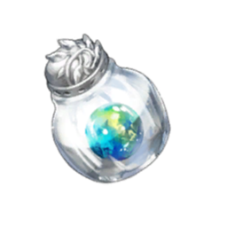
Ability Pills. You can check which resources are needed in the bottom left corner of the menu. In the same corner, you can also adjust the amount of the Gear you want to craft.Individual Gear Crafting Menu

Ability Rank
You will not be able to craft  gear right from the start. If you try to do so, you'll be met with "Your Ability Skill Level is too low" error pop-up.
gear right from the start. If you try to do so, you'll be met with "Your Ability Skill Level is too low" error pop-up.
To fix this, you need to upgrade your Ability to the Legendary rank. For that, you need to earn Ability EXP by simply crafting gear and upgrading Rank with Ability Book once you reach the EXP cap.
Image Guide

The best way to farm EXP
To get the EXP the most efficiently, craft  or
or  gear until you obtain Legendary Crafting Ability Rank.
gear until you obtain Legendary Crafting Ability Rank.
Avoid crafting  Gear as it is not worth the resources spent.
Gear as it is not worth the resources spent.
How to Obtain Ability Books?
In order to upgrade Ability, aside from EXP, you need
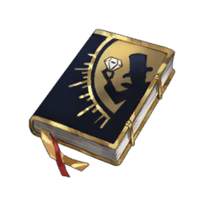
Ability Books.Here is where to obtain each of them:
- ★1 Ability S. Book: Story Pack 3 (Mist Man) Shop.
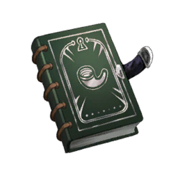
★2 Ability S. Book: Story Pack 3 (Mist Man) Shop.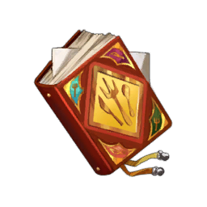
★3 Ability S. Book: Story Pack 10 (Homunculus) Shop / Evil Castle Shop.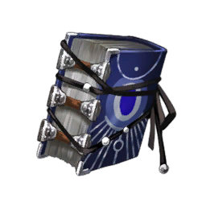
★4 Ability S. Book: Evil Castle Shop.
Upgrade Settings Feature
You can press "Upgrade Settings" button in crafting menu to instantly upgrade and / or dismantle crafted gear.
It is most useful when it comes down to Refining Powder farming using  gear.
gear.
Upgrade Settings Menu

 Alchemy
Alchemy
In case you were wondering where to obtain materials for your crafting, the answer is mostly Alchemy. It is the Field Ability of Scheherazade.
To access her ability, you need to repeat the same steps as for crafting, but picking Scheherazade instead.
Image Guide

In the Alchemy menu, you can make more advanced materials out of more common ones with the help of Ability Pills. Each common material has its own tree for upgrading.
Upon clicking the individual item, you can set the desired amount of material you want to obtain and do the alchemy.
Individual Material Alchemy Menu

Ability Rank (again)
Similarly to crafting, you will not be able to make high-end materials immediately. To do that, you need to upgrade Ability Rank as well.
You can follow the same steps as described above in Crafting section.
Best way to farm EXP
For Alchemy, it does not really matter much since you're going to use almost every material eventually. Thus, try to craft the least expensive stuff first, for example:
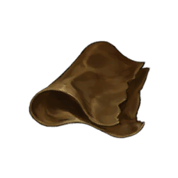
Plain Leather into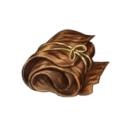
Fine Leather.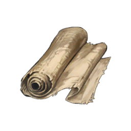
Plain Fabric into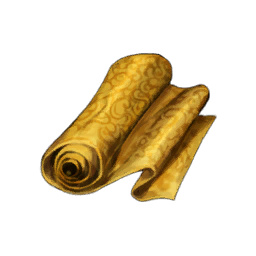
Fine Fabric.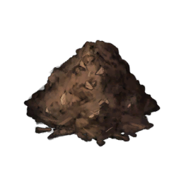
Peat into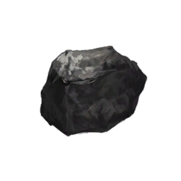
Coal.
 An Important QoL Feature
An Important QoL Feature
When you want to craft or do alchemy and have no materials, sometimes you can see the button under specific material with the Ability Pills cost.
This is not buying them — this is the cost of Alchemy for this amount of material. By pressing the button, the game does needed Alchemy for you.
- This still uses all materials required to do Alchemy.
Detailed Image Cost Explanation

Gear Menu
You can access all your gear via the Gear Menu, located in the second tab ( ) of
) of  Bag.
Bag.
Gear Menu Image

In this menu, you can check specifics about any gear you have, as well as access Refinement Menu etc.
See Details Feature
The See Details feature is a toggle that allows you to see more information about gear on page, more particularly, its values.
It can be useful but as time passes by, you start understanding the gear without needing to toggle that feature on.
Image of See Details Feature ON

Compare Feature
The Compare feature allows you to compare stats of two gears of your choice. It displays the difference in the Options and / or Main Attributes values.
First clicked gear becomes the "main" one, and any following gear is compared to the main. You can freely change compared gear by pressing different gear you want.
That being said, the inability to properly display a meaningful comparison, especially when it comes down to substats, makes it a nearly useless feature.
Image of Compare Feature

Custom Marks
The Custom Marks feature allows you to mark specific gear. To do that, press "Custom Marks Settings" in the gear preview tab.
Image Guide

This Mark is customizable, allowing you to choose 15 icons, 110 numbers (\(0, 1, \dots , 100\) & $ 00, 01, \dots, 09$) and 6 colors, resulting in 750 different unique combinations.
Custom Mark Settings Menu

 Filter
Filter
Aside from filtering by the slot the gear is for, you can also use the Filter feature to enhance this process even further. To access the menu, press the  Gear Filter icon in the top right corner of the Gear Menu.
Gear Filter icon in the top right corner of the Gear Menu.
Filter Menu

- Parts: Filter for a gear slot ( Weapon,
 Armor etc.)
Armor etc.) - Category: Filter for Exclusive, Fiend (Event) and Craftable gear.
- Rank: Filter for a Grade ( — )
- Rarity: Filter for a Tier (\(\text{I}\) — \(\text{IV}\))
- Upgrade Level: Filter for Gear Level (\(\ge +3\), \(\ge +6\), \(\ge +9\))
- Upgrade Score: Filter for Gear Score (\(\le 10\), \(\le 17\), \(\ge 18\))
- Basic/Exclusive Attribute: Filter for Basic or Exclusive Attribute, offering any of the possible stats to choose from.
Sorting
With the Sorting feature, you have the ability to sort the gear according to your preference. Possible Sorting options:
- By Highest / Lowest Grade.
- By Recently / Oldest Acquired.
- By Highest / Lowest Upgrades.
- By Highest / Lowest ATK, ATK%, Magic ATK, Magic ATK%, HP, HP%, DEF, Magic Resist, Crit Rate, Crit DMG.
- With / Without Custom Mark First.
Sorting "With Custom Mark First" (left) vs "By Highest Grade" (right)

Upgrade All
The Upgrade All feature allows you to bulk upgrade the gear level. To do that, select the gear needed, press \(\checkmark\) and set up upgrade settings.
Image Guide

Easier Selection
Similar to the filter, you can choose the gear more easily. To do that, click on the three dots button near \(\times\) and \(\checkmark\).
In this menu, you can choose the Grade, Fiend (Event) Gear, Tier (Rarity) for crafted gear and character's exclusive gear.
Filter Showcase

You can only upgrade the level. It means that to change the refining score, you need to go to each individual gear piece.
Select Gear
Select Gear is a feature that allows you to bulk dismantle the gear.
It behaves similarly to the Upgrade All feature.
Image Guide

Easier Selection
The filter for picking gear here is similar to the Upgrade All feature, with the sole exception of one more toggle: Include Upgraded Gear.
Filter Showcase

- This feature will not allow you to dismantle locked or equipped gear.
 Gear Dismantle
Gear Dismantle
Dismantle is a process to get rid of gear pieces in exchange for Refining Powder, Refining Stones or Refining Crystals.
- Refining Stones are obtained from Gear only.
- Refining Crystals are obtained from and Gear.
- Refining Powder amount depends on the Grade of the gear and Upgrade Level.
- Refining Stones / Refining Crystals amount depends on Gear Tier (Rarity).
To check the exact values, refer to Catless Cat's sheet.
To do the dismantle, it is better to use the Upgrade All or Select Gear Features, described above.
Dismantle Advice
Since Refining Powder gain depends on Upgrade Level, before dismantling, upgrade your gear to +7.
This way, you get the most efficient Refining Powder amount  Gold-wise.
Gold-wise.
What do I do with duplicate Exclusive Gear for a character?
Check Exclusive Gear section.
Crafting Guide
As a new player, you should prioritize offensive gear instead of defensive. To put it simply, it is fine to run a glass cannon strategy for the story, as long as you evaporate everything on Turn 1.
As was mentioned above, offensive gear is mostly  Weapon,
Weapon,  Accessory and
Accessory and  Gloves.
Gloves.
The whole crafting guide essentially comes down to your current needs. Here's an example of what your progression can look like as a player who never touched crafting:
Crafting Guide
- Use the code WAITING4LEGEND to obtain \(\text{III}\)
 Venomous Touch.
Venomous Touch. - Craft or Gear to upgrade Ability Skill.
-
Once you upgrade Crafting Ability to Legendary, obtain
\(\text{III}\) Weapon and \(\text{III}\)  Gloves for your Main DPS.
Gloves for your Main DPS. How do I decide what exactly to craft?
Decide by the team you're running. A proper team utilizes either
 Physical or
Physical or  Magical Damage type.
Magical Damage type.- If you utilize both damage types, it is better to ask for the help in Discord, since it's most likely not a good one.
When it comes down to the Weapon, it means crafting  Evil Dragon's Blade for the Physical DPS and
Evil Dragon's Blade for the Physical DPS and  Travel God's Friend for the Magical one.
Travel God's Friend for the Magical one. Other weapons are usually niche ones and are not necessary for a new player to worry about.
The same applies to the Gloves, meaning  God-King's Silver Arm /
God-King's Silver Arm /  Prime Authority for the Physical DPS and
Prime Authority for the Physical DPS and  Dragon Scales Protection /
Dragon Scales Protection /  Shackle of Treachery for the Magical one.
Shackle of Treachery for the Magical one.- God-King's Silver Arm and Shackle of Treachery are generally better for a new player and are still used for some DPS in late game, while Prime Authority and Dragon Scales Protection are used more in the late game, but could be less powerful at the start.
Either way, you will use both gloves types, so it is up to you what to choose.
-
Craft one more
\(\text{III}\) Venomous Touch, Weapon and Gloves for the second DPS of the team. - Move onto crafting one or two sets of the \(\text{IV}\) offensive gear, following the same pattern as in 4th point, starting from Venomous Touch.
-
Craft 2
\(\text{III}\) Armor and  Helmet pieces each.
Helmet pieces each. What
Armor and Helmet should I craft?Generally speaking, armor usage depends on the enemy.
That means crafting
 Invulnerable Armor,
Invulnerable Armor,  Helm of Carnage or
Helm of Carnage or  Fiend Guard and
Fiend Guard and  Radiant Wisdom sets.
Radiant Wisdom sets. The rest of the armor types are more niche so it's not really worth investing in them as a new player.
-
Craft
\(\text{IV}\) Gear of the opposite Damage type for the second team. - Craft whatever you feel necessary.
- Accessory, in particular Venomous Touch should be the highest priority overall, followed by Gloves, then Weapon and Armor.
- Note that Weapons take less priority later in the game due to being mostly replaced by Exclusive Gear, so you will not need that much of it compared to Gloves. On the contrary, Armor and Helmets are required in large numbers when it comes down to 3 teams in Fiend Hunter on high difficulty levels.
- Note that
Gearing Guide
When it comes down to gearing a character, you should understand that there are 6 types of characters in the game.
- Standard DPS, which utilize their own
 ATK /
ATK /  MATK to perform actions.
MATK to perform actions.- Example: Nebris, Olivier, Blade.
- Fixed Damage DPS, which deal Fixed Damage to the enemy.
- Example: Justia, Alec
- HP-reliant DPS, which use
 own HP to do damage.
own HP to do damage. - Example: Granhildr (Boo Ghost), Mamonir.
- Enemy HP-reliant DPS, which in order to deal damage, use enemy HP.
- Example: Angelica, Rou (Nature's Claw).
- Stat-Dependent Supports, which benefit from some stats to increase the buff to allies.
- Example: Diana (Anti-Dystopia), Rou (Red Riding Hood).
- Other Supports, which do not have offensive capabilities, and whose skills do not rely on anything said above.
- Example: Liberta, Refithea, Helena.
For all of these types the build you want is different.
Standard characters rely on a mix of  ATK /
ATK /  MATK and
MATK and  Crit DMG to deal DMG.
Crit DMG to deal DMG.
This usually means builds like:
- Evil Dragon's Blade \(+\) Venomous Touch \(+\) Prime Authority;
- Travel God's Friend \(+\) Venomous Touch \(+\) Dragon Scales Protection;
- Evil Dragon's Blade \(+\) Venomous Touch \(+\) God-King's Silver Arm;
- Travel God's Friend \(+\) Venomous Touch \(+\) Shackle of Treachery.
 Exclusive Gear can replace any gear piece in these builds, as was mentioned earlier.
Exclusive Gear can replace any gear piece in these builds, as was mentioned earlier.
Stats Amount
You should aim for 2000  ATK /
ATK /  MATK and 600
MATK and 600  Crit DMG as a baseline for this type of DPS.
Crit DMG as a baseline for this type of DPS.
Some DPS like Eclipse might use another  Weapon to achieve the best damage, but, generally speaking, it only matters for minmaxing.
Weapon to achieve the best damage, but, generally speaking, it only matters for minmaxing.
If you still want to craft the best gear ever possible, check Gear Calculator section.
When it comes down to  Armor, and
Armor, and  Helmet, there are a few combinations:
Helmet, there are a few combinations:
- Invulnerable Armor \(+\) Helm of Carnage if enemy deals Physical damage
- Fiend Guard \(+\) Radiant Wisdom if enemy deals Magical damage
 Immortal Golden Armor \(+\)
Immortal Golden Armor \(+\)  Helm of Death if enemy deals Fixed, True or Consumed Physical damage
Helm of Death if enemy deals Fixed, True or Consumed Physical damage Hellfire Robe \(+\)
Hellfire Robe \(+\)  Crown of Galaxy if enemy deals Fixed, True or Consumed Magical damage
Crown of Galaxy if enemy deals Fixed, True or Consumed Magical damage
Since Fixed Damage cannot crit, there is no reason to invest in  Crit Damage.
Crit Damage.
Although, it is worth mentioning that this type of DPS is heavily underperforming and not worth building whatsoever.
Therefore, the most used builds are the following:
 Peerless Javelin \(+\) Prime Authority;
Peerless Javelin \(+\) Prime Authority; Demon's Forbidden Book \(+\) Dragon Scales Protection.
Demon's Forbidden Book \(+\) Dragon Scales Protection.
 Accessory can be
Accessory can be  Ring of the Lake or
Ring of the Lake or  Charming Gaze, since it provides at least something more valuable such as
Charming Gaze, since it provides at least something more valuable such as  HP, compared to
HP, compared to  Venomous Touch with
Venomous Touch with  Crit DMG stats only.
Crit DMG stats only.
 Armor and
Armor and  Helmet choices follow the same logic as for Standard DPS.
Helmet choices follow the same logic as for Standard DPS.
Since these DPS rely on  HP to deal damage, their main stats should be
HP to deal damage, their main stats should be  HP and
HP and  Crit DMG.
Crit DMG.
Therefore, builds are:
- Immortal Golden Armor \(+\) Helm of Death \(+\) Venomous Touch if enemy deals Physical damage;
- Hellfire Robe \(+\) Crown of Galaxy \(+\) Venomous Touch if enemy deals Magical damage.
 Weapon can be either
Weapon can be either  Evil Dragon's Blade or
Evil Dragon's Blade or  Travel God's Friend regardless of damage type character deals, since its value is in the
Travel God's Friend regardless of damage type character deals, since its value is in the  Crit DMG only.
Crit DMG only.
 Gloves have no impact on the character aside from Options (Substats), so using any is fine.
Gloves have no impact on the character aside from Options (Substats), so using any is fine.
Wouldn't  Charming Gaze be a better
Charming Gaze be a better  Accessory?
Accessory?
 Charming Gaze indeed provides both
Charming Gaze indeed provides both  HP and
HP and  Crit DMG, however, due to diminishing returns, impact on
Crit DMG, however, due to diminishing returns, impact on  HP is usually less compared to
HP is usually less compared to  Crit DMG.
Crit DMG.
That means unless you have some heavy bonuses to  Crit DMG (for example, Night of Death Mamonir self-buff combined with Red Riding Hood Rou and The Gluttonous Refithea for tremendous \(+725\%\)
Crit DMG (for example, Night of Death Mamonir self-buff combined with Red Riding Hood Rou and The Gluttonous Refithea for tremendous \(+725\%\)  Crit DMG),
Crit DMG),  Venomous Touch is simply better.
Venomous Touch is simply better.
Since this type of DPS relies on the enemy, there's nothing else to raise except  Crit DMG to gain extra damage.
Crit DMG to gain extra damage.
Thus, build consists of:
- Evil Dragon's Blade \(+\) Venomous Touch;
- Travel God's Friend \(+\) Venomous Touch.
There is no difference which  Weapon out of the two listed above you use, since the characters do not scale from
Weapon out of the two listed above you use, since the characters do not scale from  ATK or
ATK or  MATK.
MATK.
 Gloves have no impact on the character except Options (Substats), and neither do
Gloves have no impact on the character except Options (Substats), and neither do  Armor and
Armor and  Helmet. Follow advice from Standard DPS tab regarding armor.
Helmet. Follow advice from Standard DPS tab regarding armor.
These supports scale their buff depending on their own stats.
Currently there are only 2 examples of this in the game:
- Anti-Dystopia Diana, which generates Energy Guard based on own MATK;
- Red Riding Hood Rou, which generates Energy Guard based on own HP.
It is not hard to figure out the builds for either of them:
- Demon's Forbidden Book \(+\) Dragon Scales Protection for Diana;
- Immortal Golden Armor \(+\) Helm of Death \(+\)
 Charming Gaze if enemy deals Physical damage for Rou;
Charming Gaze if enemy deals Physical damage for Rou; - Hellfire Robe \(+\) Crown of Galaxy \(+\) Charming Gaze if enemy deals Magical damage for Rou.
Most supports do not scale with gear. That means their main job is to survive rather than deal some damage.
Overall, their build is similar to Standard DPS, with sole exception that both offensive and defensive gear equipped can be worse compared to the rest of the team.
What about  Crit Rate? Is it useless?
Crit Rate? Is it useless?
In PvE, yes. There are plenty of supports making your crit rate high enough, and game modes like Fiend Hunter have easy conditions to achieve 100% Crit.
The only PvE usage for  Crit Rate is Floors 41-50 of the
Crit Rate is Floors 41-50 of the  Tower of Jealousy and the
Tower of Jealousy and the  Tower of Wrath.
Tower of Wrath.
What about Substats (Options)? Which do I want?
Generally speaking, it, again, depends on the type of character you're building.
- Standard DPS benefit from ATK / MATK and
 Crit DMG split;
Crit DMG split; - Fixed Damage DPS solely benefit from ATK / MATK;
- HP-reliant DPS rely on HP and Crit DMG;
- Enemy HP-reliant DPS want only Crit DMG;
- Stat-Dependent Supports want corresponding stat;
- Other Supports are fine with whatever.
As for the split (ratio) of said Options, it's better to use Gear Calculator if you want the precise answer.
If you, however, are fine with rough advice, setting up  Crit DMG on pieces that are swappable between DPS (mostly
Crit DMG on pieces that are swappable between DPS (mostly  Armor,
Armor,  Helmet and specifically
Helmet and specifically  Venomous Touch) and filling the remaining Options with another stat isn't a bad choice.
Venomous Touch) and filling the remaining Options with another stat isn't a bad choice.
Alternatively, use Character Builds made only by IceKane.
Gear Calculator
To use the Gear Calculator, use the Souseha's Database.
This calculator is made to calculate the most efficient Options (substats), although it can somewhat work for general gear as well.

To do the calculations, do the following steps:
- Select the necessary character;
- Choose specific Gear in case you want to make some of them fixed;
- Choose different Gear Grade, if necessary;
- Pick External buffs, including Crit DMG and Property DMG;
- Press Auto Calculate.
Image Guide

You will receive a table with builds, sorted by best damage dealt with Advantage. In this table, you can see the gear, bond, substat amount for each stat and finalized stats.
It is worth mentioning that Damage isn't the actual Damage you will deal in-game but rather a metric to determine how good a build is.

Crafting Resources Farm
- Refining Powder: Events, Event Shop, Dismantling Gear (mostly Grade).
- Use Powder Calculator to calculate the most efficient way to grind the Refining Powder.
- Refining Crystal: Event Shop, Golden Colloseum Shop,
 Tower of Salvation, Dismantling and Gear.
Tower of Salvation, Dismantling and Gear.  Ancient Crystals: Events, Event Shop, Golden Colosseum Shop, Tower of Salvation,
Ancient Crystals: Events, Event Shop, Golden Colosseum Shop, Tower of Salvation,  Tower of Pride, Last Night.
Tower of Pride, Last Night.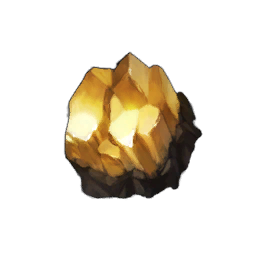
Gold Ore: Hunting Grounds, Map Absorption, Events.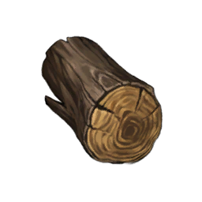
Hardwood: Hunting Grounds, Map Absorption, Events.
Related Links
- Option Calculator — Brown Dust 2 Database by souseha
- Official Probabilities Gitbook
- Brown Dust II Sheets by BotAn
- Brown Dust II Sheets by CatlessCat
- Gear — Brown Dust 2 Wiki
- Powder Calculator — Brown Dust 2 Database by souseha
- Character Builds — dotgg.gg
- Alternative Gear Calculator by Kane (no longer maintained)
- BD2 - The Tourist's Sheet (no longer maintained)
- Official Brown Dust II Discord